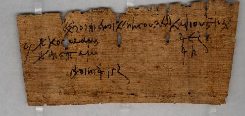

Account for Arrears of Wine.
AM 4108 (=P. Princeton II 88), V c. AD

Also
available: a larger image (564k)
Background and Physical Properties
Publ./Side: Recto
Material: Papyrus
Items: 1
Size: 5.5 x 12.0 cm.
Lines: 4 lines
Negative: Transparency
Conservation Status:
Status: Published
--------------------------------------------
Contents
Date: V c. AD
Provenance: Oxyrhynchus, Oxyrhynchite nome, province of Egypt
Acquisition: Gift of Robert Garrett, 1942 (GD 7682 B)
Language: Greek
Genre: Documentary
Author: Unknown
Type of Text/Title of Work: Account
Content: Account for arrears of wine by vine dressers in the
village of Nesus Leukadiou.
--------------------------------------------
Information on Publications
First edition:
Series and volume:
Published: E. H. Kase, Papyri in the Princeton University
Collections (1936), II 38;
P. J. Sijpesteijn, "Corrections on Some Princeton
Papyri," ZPE 68 (1987): 143-148
Editor:
Year:
Pg/Nr:
Photo: